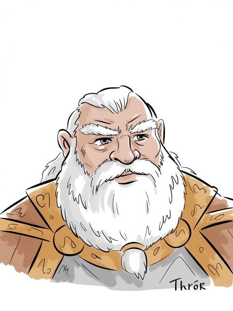

The Arda Archive · Volume III · Records of Persons
The Arda Archive · Thrórmcmxlvii
◌
Thrór
Durin's Folk

Durin's Folk
Of the house
Durin's Folk of Erebora
The dates as the archive holds them
T.A. 2542–T.A. 2790 (slain by Azog at Moria's gate)b
Style and office
The map and key; his death began the War of the Dwarves and Orcsc
The name in the scriptsd
— Tengwar, General Use — Cirth, Angerthas Erebor
The archive sets this name in the tengwar, General Use mode and in the cirth, Angerthas Erebor mode. TOLKIEN DID NOT WRITE IT SO: the letter values are Appendix E's, read from the tables named below; the setting of this name in them is the archive's own work and is offered as nothing else. The sarati are REFUSED, and the refusal is the archive's published answer: it holds the shapes -- 48 of 48 of the ConScript block, Björkman's outline face, and 66 value-labelled plates -- and nothing whatever that binds a shape to a sound. Every value table in every source it can reach is an image carrying no text.
What the corpus says
“The Dwarves Thrór and his son Thráin (together with Thráin’s son Thorin, afterwards called”f
“Thrór, Dáin’s heir, with Borin his father’s brother and the remainder of the”g
“exhibit this is the name of the mines where Thorin’s grandfather, Thrór, is”h
“Thrór only, and he perished. At last, however, Balin listened to the”i
“Thrór's son, though he could not speak his own name or his son's. By”j
“2590 Thrór the Dwarf (of Durin’s race) founds the realm of”k
“survivors, stating (in contradiction to the account in The Hobbit) that ‘many’ of Thrór’s kin”l
a The text — LotR App A III (Durin's Folk); Hobbit [C]
b The text — [I-H]
c The archive's reading — [I-H]
d The transcription is the ARCHIVE'S OWN WORK and is not attested: the letter values are read from site/arda_scripts.json and site/arda_tengwar_mode_gu.json for the tengwar, site/arda_cirth.json and site/arda_cirth_codepoints.json for the cirth, and the mode is named beside each line. [I-M]
e The ruling — the owner's ruling of 13 August 2026, on the 552 generated images: 'we are free to use them'. That settles the LICENCE and does not settle the HAND, which is recorded above as what it is. [C]
f The text — Unfinished Tales of Numenor and Middle Earth · l.10107[C]
g The text — Appendix Tables Raw · l.74[C]
h The text — Secret Vice Tolkien on Invented Languages · l.4683[C]
i The text — The Lord of the Rings · l.11161[C]
j The text — The War of the Ring · l.13557[C]
k The text — The Peoples of Middle Earth · l.7816[C]
l The text — The History of the Hobbit · l.17387[C]
☞IJ·iij“Erebor
A triskele boss — the archive's own hand
Volume III · Records of Personsmcmxlviii
◌
“Erebor with Thrór, the king’s eldest son, while others went east to the Iron”m
The name stands in 191 cited lines, in 17 of the corpus's 192 texts — most often in The Peoples of Middle Earth (42), The Complete Tolkien Companion (36), The Lord of the Rings (24).n
Two trees and the moons — the archive's own device, not a likeness
The drafts against the published text
62 cited lines stand in 4 volumes of the drafts and 49 in 4 of the published books — the record thinned as Tolkien revised.o
Khazad-dûm (18), Dale (4), Dunland (2), Erebor & Durin's Folk in exile (1).q
A line the archive could not resolve
“(father of Thror father of Thorin28 who fell in battle) possessed” — the name is near this line and the archive does not assert that it is this record.r
As the archive holds the line
of Durin's Folk; in Erebor; child of Dáin I; father or mother of Thráin II; T.A. 2542–T.A. 2790 (slain by Azog at Moria's gate).s
Named in the same lines
Azog (8), Nár (8), Thráin II (6), Borin (4) — a shared line is a fact about the line, not a claim that the two met.t
counted from corpus lines that name BOTH records. A shared line is a fact about the line, not a claim that the two met; `eg` names a line a reader can open. [C]
By its style
Thrór is styled King under the Mountain — “Thrór Dwarf of the House of Durin, King under the Mountain at the coming of Smaug, father”u
What was looked for and not found
a marginal hand recording a change to this record — searched over 59 verified notes in site/arda_hands.json, and nothing was found.v
What was looked for and not found
recorded by-names for this figure — searched over 47 worked sets in site/arda_epithets.json, and nothing was found.w
m The text — The Atlas of Middle Earth · l.2543[EXT]
n Counted — site/arda_apparatus.json[C]
o Counted — site/arda_apparatus.json[C]
p Counted — site/arda_apparatus.json[C]
q Counted — site/arda_apparatus.json[C]
r The line — The Return of the Shadow · l.16990[C]
s The table — LotR App A III (Durin's Folk); Hobbit[C]
t Counted — site/arda_apparatus.json[C]
u The line, found through Tolkien Gateway — Unfinished Tales of Numenor and Middle Earth · l.14736[C]
v The search — site/arda_apparatus.json[C]
w The search — site/arda_apparatus.json[C]
☞IJ·ivThuringwethil
Seven stars — the archive's own tailpiece
Volume III
Thrór
Durin's Folk
Durin's Folk (T.A. 2542–T.A. 2790 (slain by Azog at Moria's gate))
Part of the Arda Archive — a corpus-first index of Tolkien's legendarium; claims are cited or marked how far they are inferred, silences are declared, and the colophon prints how many claims carry neither.